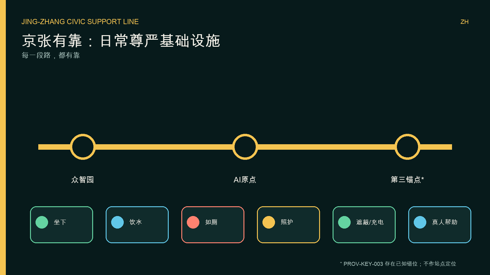
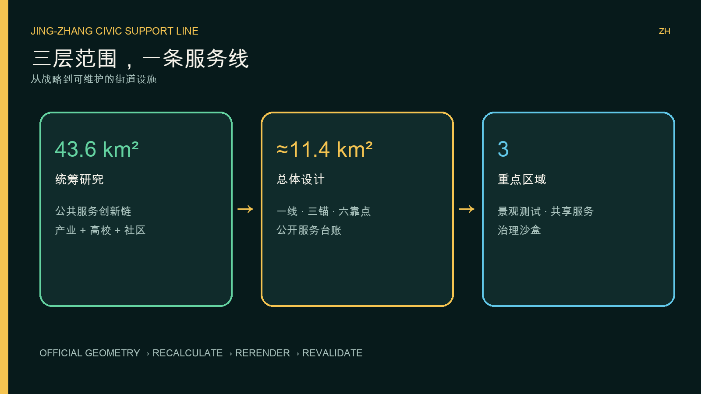
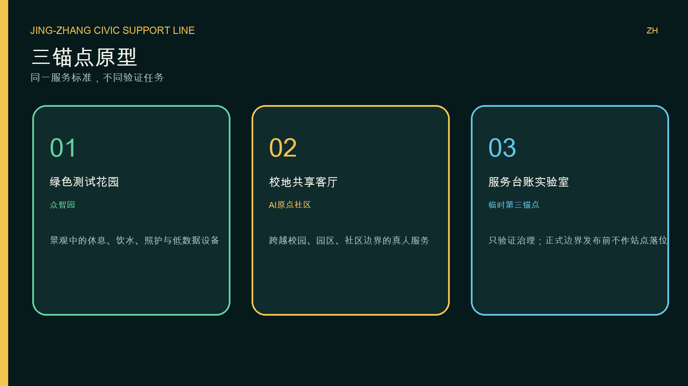
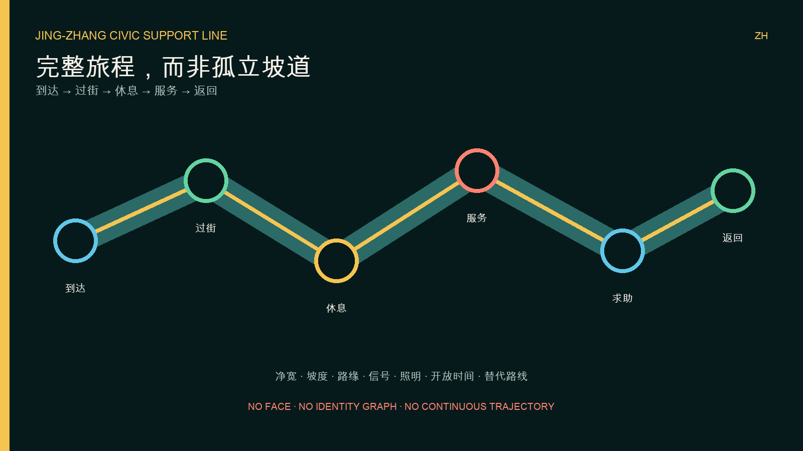
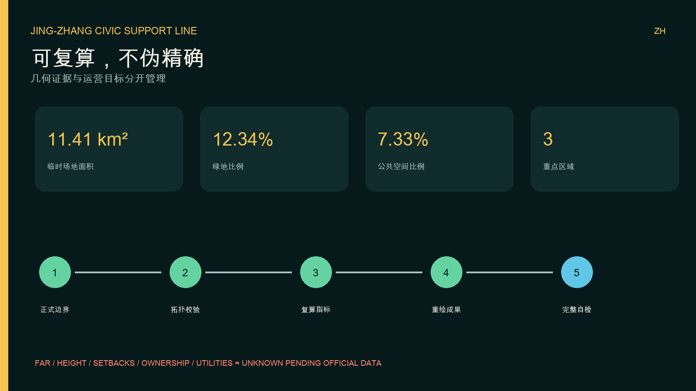

每一段路，都有靠
把坐下、饮水、如厕、照护、遮蔽/充电、真人帮助组织为连续公共服务。
日常尊严不是附加功能，而是城市基础设施。所有空间落位均为概念建议，并受 provisional geometry 限制。
把坐下、饮水、如厕、照护、遮蔽/充电、真人帮助组织为连续公共服务。
只处理聚合需求、故障码与工单建议；不做人脸、身份图谱或连续轨迹。
每次真实派单由值班人员确认；无手机也能获得同等服务。





空间结论均为概念建议；provisional geometry 发布正式替代数据后必须全量复算。